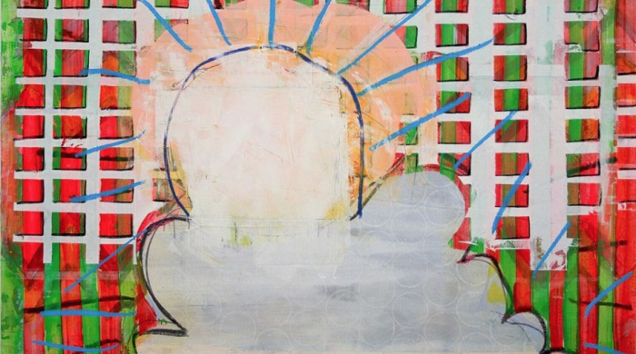

The Art Times
Your Leading Source of Art Coverage


Exhibition opens Wednesday 15 February, 6 – 8pm.
One’s ability in to stay in the unconscious mind is impossible. The space before something becomes a conscious idea, is where Hewsons’ practice convenes.
According to the psychiatrist and psychoanalyst Carl Jung, certain details are brought from the unconscious mind into consciousness through past experiences, free memories, repressed memories, dreams, active imagination and Free Association (Freud). This is known as the process of Individuation and is unique to each person. As an area of self-investigation, Hewson attempts to tap into and explore the realm as this point of transformation.
In order to achieve a comprehensive outcome, an instinctual approach to image making is employed. Impulsive reactions to mixed materials; surfaces and ideas are applied with assurance and without prejudice, opening the imagination to play and experimentation at the highest level. This ‘Creative Active Three way’ allows for an infinite amount of possibilities with the least amount of limitations.
The ego, which is the center of consciousness, must be checked and disregarded as the ambition is to produce a body of work that is whole, not perfect, or necessarily aesthetically pleasing. Varied impressions from the unconscious are applied to multiple surfaces at one time. Each painting is a documented glimpse of a more comprehensive analysis of the unconscious.
Upon psychoanalysis of the work, repeated patterns, circles and geometric shapes echo aspects of art therapy theory inclusive of obsessive-compulsive behaviour. Surrounding battles of the artist’s ego intrude on more obvious symbols of the conscious mind like that of the moon, clouds, symbols of love and planets, which represent that of the intangible. The abstract nature of the work encourages the viewer to project his or her own perceptions from Individuation with the practice of Free Association.
Artist Bio
Born Dublin, 1986, Leah Hewson achieved a First-Class BA (Hons) in Fine Art from Dún Laoghaire Institute of Art, Deign and Technology in 2010. Hewson’s first solo show, What’s behind the Magic door? 2011 gave way for her work to be included in the Microsoft Collection as well as being published as part of Goblin Market: New Irish Contemporary Art. Amongst a steady flow of portrait commissions for private collections, Hewson developed work for her second exhibition CUSP, held in 2013. During 2015 Hewson gained experience working in Sean Scully’s studio in New York and this has seen a shift into abstraction for Hewson’s practice. Hewson has made this body of work while being artist in residence at the RHA Studios, 2016.
www.leahhewson.com
Image: Leah Hewson, Mountain, 2015, Mixed media on board, 20 x 50cm, Image courtesy of the artist.
Article sourced from Visual Arts Ireland